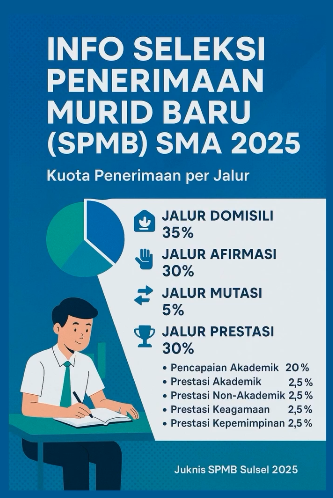

Menjalankan PPDB 2025
Published: 24 April 2025 | By: SMANSA Journalistik

Sistem Penerimaan Murid Baru (SPMB) jejang SMA/SMK di provinsi Sulawesi Selatan telah dimulai. Proses pre-pendaftaran SPMB 2025 berlangsung mulai 1 April hingga 12 Mei 2025. Jalur SPMB untuk tingkat SMA dibagi menjadi 4 jalur, yaitu jalur domilisi, afirmasi, mutasi dan prestasi.
SPMB tahun ini akan dilaksanakan Tes Potensi Akademik (TPA). Sekolah yang berada di wilayah Palopo akan melaksanakan TPA pada tanggal 13 Mei 2025.
Demikian informasi tentang jadwal SPMB 2025 di SMA Negeri 1 Palopo.